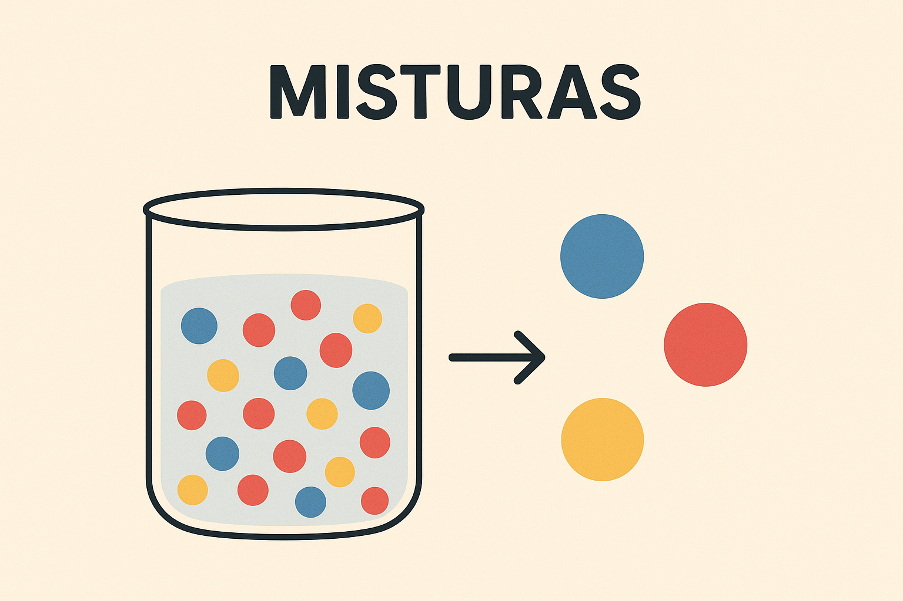
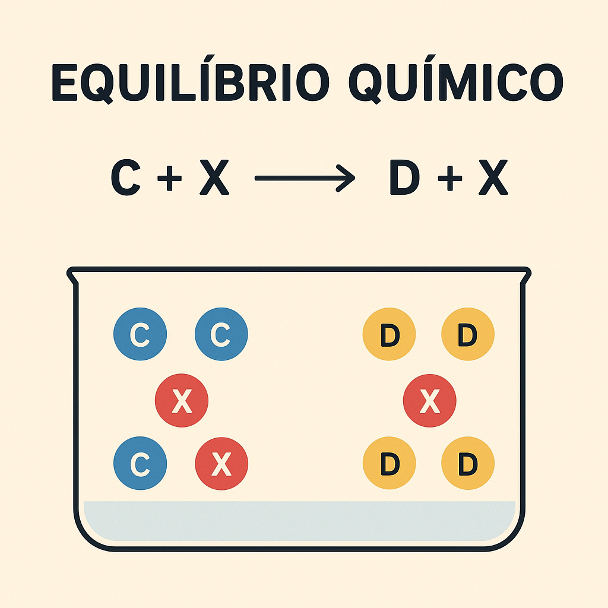
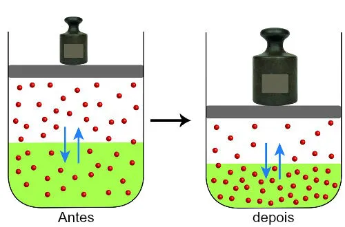
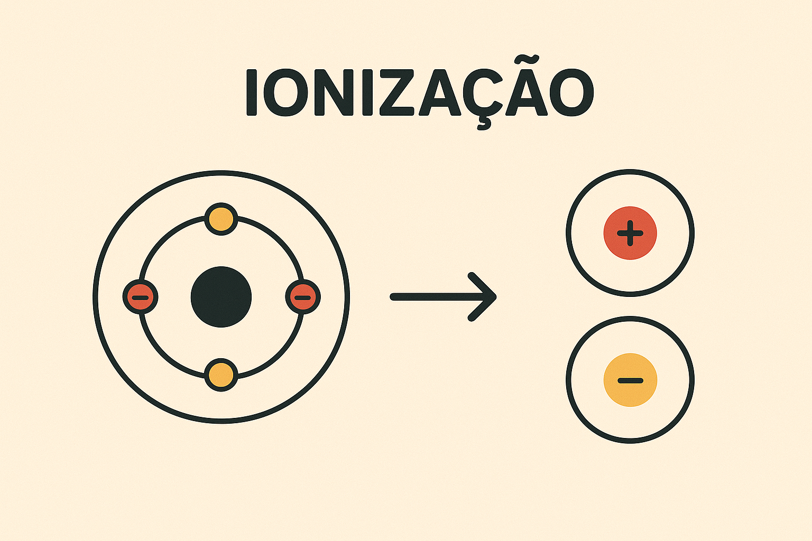
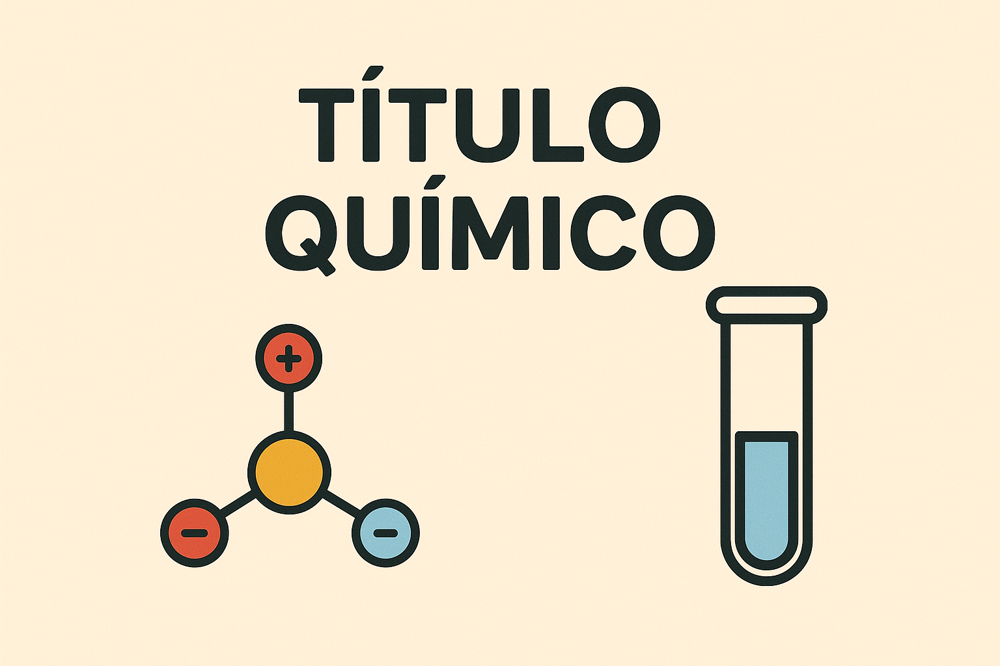

Playlist de Química


Parte por milhão (ppm)
PPM é uma unidade de concentração para soluções muito diluídas, indicando o número de partes do soluto por um milhão de partes da solução (ex: MG de soluto por KG ou L de solução). É crucial para medições ambientais e de qualidade.

Diluição das soluções
Diluição é o processo de adicionar mais solvente a uma solução. Isso diminui a concentração do soluto, mas a sua quantidade total (mols ou massa) permanece inalterada. O cálculo segue a fórmula da conservação da massa: Ci.Vi = Cf.Vf

Misturas
Mistura é a união física de duas ou mais substâncias puras (componentes), onde cada uma mantém suas propriedades químicas. Elas são classificadas como homogêneas (uma única fase) ou heterogêneas (duas ou mais fases.
Equilíbrio Químico
O equilíbrio químico é atingido em uma reação reversível quando a velocidade da reação direta é igual à velocidade da inversa. Neste estado, as concentrações de reagentes e produtos se tornam constantes no tempo (equilíbrio dinâmico).
O Princípio de Le Chatelier descreve como um sistema em equilíbrio reage a uma perturbação externa (concentração, pressão ou temperatura): o sistema se desloca no sentido que anula o efeito dessa perturbação e restabelece o equilíbrio.

Os principais fatores que deslocam o equilíbrio são: Concentração (adição ou remoção de espécies), Pressão/Volume (afetando reações gasosas) e Temperatura (favorecendo a reação endotérmica ou exotérmica).
O Produto Iônico da Água (Kw) é a constante da autoionização da água em H^+ e OH^-. O pH e o pOH são escalas logarítmicas que medem, respectivamente, a concentração desses íons e indicam a acidez (pH < 7), neutralidade (pH=7) ou basicidade (pH> 7) de uma solução.
O Título (T) ou Fração em Massa é a relação entre a massa do soluto (m1) e a massa total da solução (Msolução). É uma concentração adimensional que pode ser expressa em porcentagem (T% = T.100).
